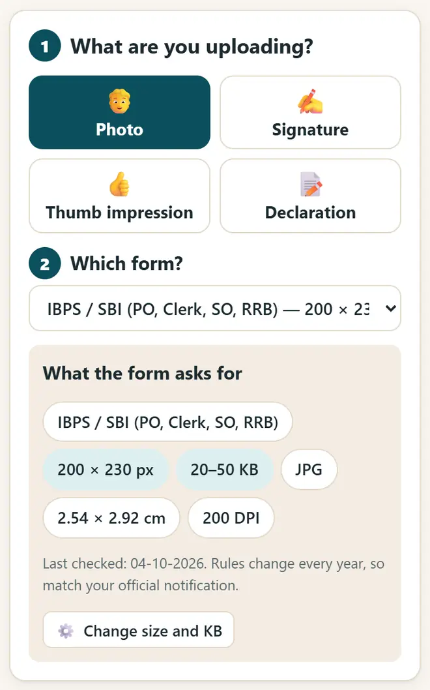

ಪರೀಕ್ಷೆ ಮತ್ತು ಉದ್ಯೋಗ ಫಾರ್ಮ್ಗಳಿಗಾಗಿ ಫೋಟೋ, ಸಹಿಯ ಸೈಜ್ ಸರಿಪಡಿಸುವುದು ಹೇಗೆ
ಫೋಟೋ ಅಥವಾ ಸಹಿ ಕೆಲವು KB ಹೆಚ್ಚು, ಕಡಿಮೆ ಅಥವಾ ತಪ್ಪು ಆಕಾರದಲ್ಲಿದ್ದರೆ ಆನ್ಲೈನ್ ಫಾರ್ಮ್ ಅದನ್ನು ತಿರಸ್ಕರಿಸುತ್ತದೆ. ಯಾವ ವೆಬ್ಸೈಟ್ಗೂ ಕಳುಹಿಸದೆ, ಫೋನ್ನಲ್ಲೇ ಎರಡನ್ನೂ ಫಾರ್ಮ್ ನಿಯಮಗಳಿಗೆ ಹೊಂದಿಸುವುದು ಹೇಗೆ ಎಂದು ಇಲ್ಲಿ ನೋಡಿ.
ಸಂಕ್ಷಿಪ್ತ ಉತ್ತರ
ಫಾರ್ಮ್ ಫೋಟೋ & ಸಹಿ ರಿಸೈಜರ್ ತೆರೆದು, “ಫೋಟೋ” ಅಥವಾ “ಸಹಿ” ಒತ್ತಿ, ನಿಮ್ಮ ಪರೀಕ್ಷೆ ಅಥವಾ ಫಾರ್ಮ್ ಆಯ್ಕೆಮಾಡಿ, ಚಿತ್ರ ಸೇರಿಸಿ. ಫ್ರೇಮ್ ಒಳಗೆ ಸರಿಸಿ, ಜೂಮ್ ಮಾಡಿ ಸರಿಯಾಗಿ ಕೂರಿಸಿ, “ಡೌನ್ಲೋಡ್” ಒತ್ತಿ. ಫೈಲ್ ತೋರಿಸಿದ KB ಮಿತಿಯೊಳಗೇ ತಯಾರಾಗುತ್ತದೆ. ಸಂಖ್ಯೆಗಳನ್ನು ಯಾವಾಗಲೂ ನಿಮ್ಮ ಅಧಿಕೃತ ಅಧಿಸೂಚನೆಯೊಂದಿಗೆ ಹೋಲಿಸಿ.
5 ಹಂತಗಳಲ್ಲಿ ಫೋಟೋ ಮತ್ತು ಸಹಿ ಸಿದ್ಧ
-
ಏನನ್ನು ಅಪ್ಲೋಡ್ ಮಾಡುತ್ತೀರಿ ಎಂದು ಆಯ್ಕೆಮಾಡಿ
ಫಾರ್ಮ್ ಫೋಟೋ & ಸಹಿ ರಿಸೈಜರ್ ತೆರೆದು “ಫೋಟೋ”, “ಸಹಿ”, “ಹೆಬ್ಬೆರಳಿನ ಗುರುತು” ಅಥವಾ “ಘೋಷಣೆ” ಒತ್ತಿ.
-
ನಿಮ್ಮ ಪರೀಕ್ಷೆ ಅಥವಾ ಫಾರ್ಮ್ ಆಯ್ಕೆಮಾಡಿ
ಪಟ್ಟಿಯಿಂದ ಆಯ್ಕೆಮಾಡಿ: ಬ್ಯಾಂಕ್ಗಳು (IBPS, SBI), UPSC, SSC, ರೈಲ್ವೆ (RRB), NEET, PAN ಕಾರ್ಡ್, ಡ್ರೈವಿಂಗ್ ಲೈಸೆನ್ಸ್ ಅಥವಾ ಸಾಮಾನ್ಯ ಸೈಜ್. “ಫಾರ್ಮ್ ಕೇಳುವುದು” ಪೆಟ್ಟಿಗೆಯಲ್ಲಿ ಪಿಕ್ಸೆಲ್, KB ಮತ್ತು DPI ಕಾಣುತ್ತವೆ. ನಿಮ್ಮ ಅಧಿಸೂಚನೆಯಲ್ಲಿ ಬೇರೆ ಸಂಖ್ಯೆಗಳಿದ್ದರೆ “ಗಾತ್ರ ಮತ್ತು KB ಬದಲಿಸಿ” ಒತ್ತಿ ಅವನ್ನು ಟೈಪ್ ಮಾಡಿ.

ಫಾರ್ಮ್ ಆಯ್ಕೆಮಾಡಿ: ಆ್ಯಪ್ ಪಿಕ್ಸೆಲ್, KB ಮತ್ತು DPI ತೋರಿಸುತ್ತದೆ. -
ಚಿತ್ರ ಸೇರಿಸಿ, ಕ್ರಾಪ್ ಸರಿಪಡಿಸಿ
“ಚಿತ್ರ ಆರಿಸಿ” ಅಥವಾ “ಕ್ಯಾಮೆರಾ” ಒತ್ತಿ. ಮುಖ ಅಂಡಾಕಾರದ ಗೈಡ್ ಒಳಗೆ ಬರುವವರೆಗೆ ಚಿತ್ರವನ್ನು ಸರಿಸಿ, ಜೂಮ್ ಮಾಡಿ. ಸಹಿಗಾಗಿ “ಶಾಯಿವರೆಗೆ ಆಟೋ-ಕ್ರಾಪ್” ಒತ್ತಿ; ಸುತ್ತಲಿನ ಖಾಲಿ ಕಾಗದ ಕತ್ತರಿಸಿಹೋಗುತ್ತದೆ.
-
ಸ್ಪಷ್ಟಗೊಳಿಸಿ
ಬೇಕಿದ್ದರೆ ಬ್ರೈಟ್ನೆಸ್ ಮತ್ತು ಕಾಂಟ್ರಾಸ್ಟ್ ಬದಲಿಸಿ. “ಹಿನ್ನೆಲೆ ಬಿಳಿಯಾಗಿಸಿ” ಸಾದಾ ತಿಳಿ ಗೋಡೆಯನ್ನು ಶುದ್ಧ ಬಿಳಿಯಾಗಿಸುತ್ತದೆ. ಸಹಿಯಲ್ಲಿ ನೆರಳು ಮತ್ತು ಕಾಗದದ ಬಣ್ಣವನ್ನು ಆ್ಯಪ್ ತೆಗೆದುಹಾಕುತ್ತದೆ.
-
ಪರಿಶೀಲಿಸಿ, ಡೌನ್ಲೋಡ್ ಮಾಡಿ
ಫಲಿತಾಂಶದಲ್ಲಿ ಪಿಕ್ಸೆಲ್ ಮತ್ತು ಫೈಲ್ ಸೈಜ್ ಕಾಣುತ್ತವೆ; ಫೈಲ್ ಅಪ್ಲೋಡ್ಗೆ ಸಿದ್ಧವಾದಾಗ ಆ್ಯಪ್ ತಿಳಿಸುತ್ತದೆ. “ಡೌನ್ಲೋಡ್” ಒತ್ತಿ, ಅದೇ ಫೈಲ್ ಅನ್ನು ಫಾರ್ಮ್ನಲ್ಲಿ ಅಪ್ಲೋಡ್ ಮಾಡಿ. ನಿಮ್ಮ ಮೂಲ ಫೋಟೋವನ್ನೂ ಇಟ್ಟುಕೊಳ್ಳಿ.

ಸಿದ್ಧವಾದ ಫೈಲ್, ಅದರ ಪಿಕ್ಸೆಲ್ ಮತ್ತು KB ಜೊತೆ.
ಫೋಟೋ ತಿರಸ್ಕೃತವಾಗದಿರಲು ಸಲಹೆಗಳು
- ಫೋಟೋ: ಹಗಲು ಬೆಳಕಿನಲ್ಲಿ ಸಾದಾ ಬಿಳಿ ಅಥವಾ ತಿಳಿ ಬಣ್ಣದ ಗೋಡೆಯ ಮುಂದೆ ನಿಂತು ನೇರವಾಗಿ ಕ್ಯಾಮೆರಾ ನೋಡಿ. ಟೋಪಿ, ಕಪ್ಪು ಕನ್ನಡಕ ಬೇಡ.
- ಸಹಿ: ಸಾದಾ ಬಿಳಿ ಕಾಗದದ ಮೇಲೆ, ಫಾರ್ಮ್ ಕೇಳುವ ಬಣ್ಣದ ಶಾಯಿಯಲ್ಲಿ (ಸಾಮಾನ್ಯವಾಗಿ ಕಪ್ಪು) ಸಹಿ ಮಾಡಿ. ನೇರ ಮೇಲಿನಿಂದ, ನಿಮ್ಮ ನೆರಳು ಬೀಳದಂತೆ ಫೋಟೋ ತೆಗೆಯಿರಿ.
- ಕೆಲವು ಫಾರ್ಮ್ಗಳು ಈಗ ಫೋಟೋವನ್ನು ಕ್ಯಾಮೆರಾದಿಂದ ಲೈವ್ ಆಗಿ ತೆಗೆದುಕೊಂಡು, ಸಹಿಯನ್ನು ಮಾತ್ರ ಅಪ್ಲೋಡ್ ಮಾಡಲು ಹೇಳುತ್ತವೆ. ಮೊದಲು ಅಧಿಸೂಚನೆ ಓದಿ.
- ಸೈಜ್ಗಳು ಫಾರ್ಮ್ನಿಂದ ಫಾರ್ಮ್ಗೆ, ವರ್ಷದಿಂದ ವರ್ಷಕ್ಕೆ ಬದಲಾಗುತ್ತವೆ. ಆ್ಯಪ್ನಲ್ಲಿರುವ ಸೈಜ್ಗಳು ಆರಂಭಕ್ಕೆ ಮಾತ್ರ; ನಿಮ್ಮ ಪರೀಕ್ಷೆಯ ಅಧಿಕೃತ ಅಧಿಸೂಚನೆಯೇ ಅಂತಿಮ. ದಾಖಲೆಯ ಚಿಕ್ಕ PDF ಬೇಕಿದ್ದರೆ PDF ಕಂಪ್ರೆಸ್ & JPG ಇಂದ PDF ಬಳಸಿ.
ಹೊಸ ಉಚಿತ ಟೂಲ್ಗಳು ಮತ್ತು ಹಿಂದಿಯಲ್ಲಿ AI ಪಾಠಗಳನ್ನು ಪಡೆಯಿರಿ
ನಮ್ಮ ಇಮೇಲ್ ಪಟ್ಟಿಗೆ ಸೇರಿ: ಹೊಸ ಉಚಿತ ಆ್ಯಪ್ಗಳು, ಹೊಸ ಮಾರ್ಗದರ್ಶಿಗಳು ಮತ್ತು AI ಕುರಿತ ಹಿಂದಿ ವೀಡಿಯೊ ಪಾಠಗಳ ಮಾಹಿತಿ ನಿಮಗೆ ಬರುತ್ತದೆ. ಸ್ಪ್ಯಾಮ್ ಇಲ್ಲ.
ವಯಸ್ಕರಿಗೆ (18+) ಮಾತ್ರ. ಯಾವಾಗ ಬೇಕಾದರೂ ಹೆಸರು ತೆಗೆಸಬಹುದು.
ನಾವು ಈ ಟೂಲ್ಗಳನ್ನು ಏಕೆ ಸೂಚಿಸುತ್ತೇವೆ
- ಎಲ್ಲರಿಗೂ ಉಚಿತ: ಜಾಹೀರಾತು ಇಲ್ಲ, ಸೈನ್-ಅಪ್ ಇಲ್ಲ, ಪಾವತಿ ಯೋಜನೆ ಇಲ್ಲ.
- ಖಾಸಗಿ: ನಿಮ್ಮ ಫೈಲ್ಗಳು ಮತ್ತು ವಿವರಗಳು ನಿಮ್ಮ ಸ್ವಂತ ಸಾಧನದಲ್ಲೇ ಇರುತ್ತವೆ.
- ಫೋನ್, ಲ್ಯಾಪ್ಟಾಪ್ ಅಥವಾ ಸ್ಮಾರ್ಟ್ಬೋರ್ಡ್ನಲ್ಲಿ ಕೆಲಸ ಮಾಡುತ್ತವೆ, ಒಮ್ಮೆ ತೆರೆದ ನಂತರ ಇಂಟರ್ನೆಟ್ ಇಲ್ಲದೆಯೂ.
- ಕನ್ನಡ ಮತ್ತು ಹಿಂದಿ ಸೇರಿದಂತೆ 12 ಭಾಷೆಗಳಲ್ಲಿ.
ವೀಡಿಯೊ ಮೂಲಕ ಕಲಿಯಲು ಇಷ್ಟವೇ? ನಮ್ಮ YouTube ಚಾನೆಲ್ನಲ್ಲಿ AI ಮತ್ತು ಉಚಿತ ಟೂಲ್ಗಳ ಹಿಂದಿ ಪಾಠಗಳನ್ನು ನೋಡಿ.
ಆಗಾಗ ಕೇಳುವ ಪ್ರಶ್ನೆಗಳು
SSC, UPSC ಅಥವಾ ಬ್ಯಾಂಕ್ ಫಾರ್ಮ್ಗಳಿಗೆ ಫೋಟೋ, ಸಹಿ ಸೈಜ್ ಎಷ್ಟಿರಬೇಕು?
ಅದು ಫಾರ್ಮ್ ಮತ್ತು ವರ್ಷವನ್ನು ಅವಲಂಬಿಸಿದೆ; ಒಂದೇ ಉತ್ತರ ಇಲ್ಲ. ಪ್ರತಿ ಪರೀಕ್ಷೆಗೆ ಸಾಮಾನ್ಯವಾಗಿ ಕೇಳುವ ಸೈಜ್ಗಳನ್ನು ಆ್ಯಪ್ ತುಂಬಿ, ಅವನ್ನು ಕೊನೆಯ ಬಾರಿ ಯಾವಾಗ ಪರಿಶೀಲಿಸಲಾಗಿದೆ ಎಂದು ತೋರಿಸುತ್ತದೆ. ಆದರೆ ನೀವು ಅವನ್ನು ನಿಮ್ಮ ಅಧಿಕೃತ ಅಧಿಸೂಚನೆಯೊಂದಿಗೆ ಹೋಲಿಸಲೇಬೇಕು; ವ್ಯತ್ಯಾಸವಿದ್ದರೆ “ಗಾತ್ರ ಮತ್ತು KB ಬದಲಿಸಿ” ಬಳಸಿ ಬದಲಿಸಿ.
ಫೋಟೋವನ್ನು 20 KB ಯಿಂದ 50 KB ಒಳಗೆ ತರುವುದು ಹೇಗೆ?
ಈ ಮಿತಿಯಿರುವ ಫಾರ್ಮ್ ಆಯ್ಕೆಮಾಡಿ, ಅಥವಾ “ಸ್ವಂತ ಗಾತ್ರ” ಆಯ್ಕೆಮಾಡಿ ನಿಮ್ಮ ಅಧಿಸೂಚನೆಯಲ್ಲಿರುವ ಅಗಲ, ಎತ್ತರ ಮತ್ತು KB ಟೈಪ್ ಮಾಡಿ. ಮಿತಿಯೊಳಗೆ ಹೊಂದುವ ಅತ್ಯುತ್ತಮ ಗುಣಮಟ್ಟವನ್ನು ಆ್ಯಪ್ ಆಯ್ಕೆಮಾಡುತ್ತದೆ.
ನನ್ನ ಫೋಟೋ ಎಲ್ಲಿಗಾದರೂ ಅಪ್ಲೋಡ್ ಆಗುತ್ತದೆಯೇ?
ಇಲ್ಲ. ಎಲ್ಲವೂ ನಿಮ್ಮ ಬ್ರೌಸರ್ ಒಳಗೇ ನಡೆಯುತ್ತದೆ; ಫೋಟೋ, ಸಹಿ ನಿಮ್ಮ ಸಾಧನದಿಂದ ಹೊರಹೋಗುವುದಿಲ್ಲ. ಸೈಬರ್ ಕೆಫೆಯಲ್ಲೂ ಇದು ಸುರಕ್ಷಿತ: ಮುಂದಿನವರಿಗಾಗಿ ಏನೂ ಉಳಿಯುವುದಿಲ್ಲ.
ನನ್ನ ಫೈಲ್ ಕನಿಷ್ಠ KB ಗಿಂತ ಚಿಕ್ಕದಾಗಿ ಬರುತ್ತಿದೆ. ಈಗೇನು ಮಾಡಲಿ?
ಆ್ಯಪ್ ಅದನ್ನು ತಾನೇ ನೋಡಿಕೊಳ್ಳುತ್ತದೆ. ಅತ್ಯುತ್ತಮ ಗುಣಮಟ್ಟದಲ್ಲೂ ಫೈಲ್ ಕನಿಷ್ಠಕ್ಕಿಂತ ಕಡಿಮೆ ಇದ್ದರೆ, ಸೈಜ್ ಕನಿಷ್ಠವನ್ನು ತಲುಪುವಂತೆ ಫೈಲ್ ಒಳಗೆ ಹಾನಿಯಿಲ್ಲದ ಟಿಪ್ಪಣಿಯನ್ನು ಸೇರಿಸುತ್ತದೆ. ಚಿತ್ರ ಹಾಗೆಯೇ ಕಾಣುತ್ತದೆ, ಎಂದಿನಂತೆ ತೆರೆಯುತ್ತದೆ.
ಪಾಸ್ಪೋರ್ಟ್ ಸೈಜ್ ಫೋಟೋಗಳನ್ನು ಪ್ರಿಂಟ್ ಮಾಡಬಹುದೇ?
ಹೌದು. ಫಲಿತಾಂಶದ ಕೆಳಗೆ “ಫೋಟೋ ಪ್ರತಿಗಳನ್ನು ಮುದ್ರಿಸಿ” ತೆರೆದು, ಪ್ರತಿಗಳ ಸಂಖ್ಯೆ ಆಯ್ಕೆಮಾಡಿ, ನಿಜವಾದ ಅಳತೆಯಲ್ಲಿ (100%) ಪ್ರಿಂಟ್ ಮಾಡಿ.
ಉಪಯೋಗವಾಯಿತೇ?
ಸ್ನೇಹಿತರಿಗೆ, ಸಹೋದ್ಯೋಗಿಗಳಿಗೆ ಅಥವಾ ನಿಮ್ಮ ಶಾಲೆಯ WhatsApp ಗುಂಪಿಗೆ ಕಳುಹಿಸಿ.